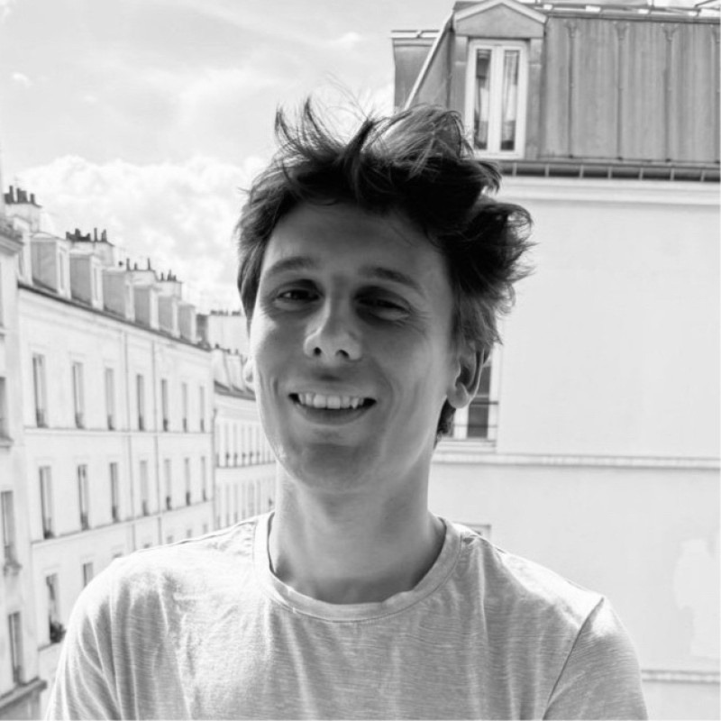
AI Research & Engineering Talent
Full-cycle recruiter specializing in AI research & engineering talent. Built my expertise as Head of the Data/AI practice at Lity, before going fully independent with Bluecoders. I've supported hiring at 50+ tech companies and placed 35+ top profiles on permanent contracts. Now at Axiōma Search, an independent recruitment firm, I partner with multiple ambitious AI companies at once on senior hires across Paris, London, New York and San Francisco.
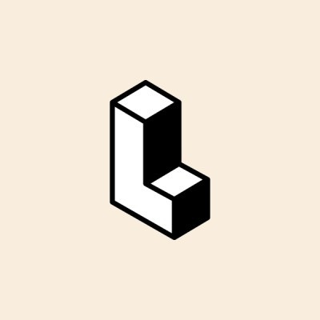
Lity
2023 – 2025
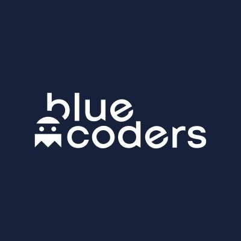
Bluecoders
2025 – 2026
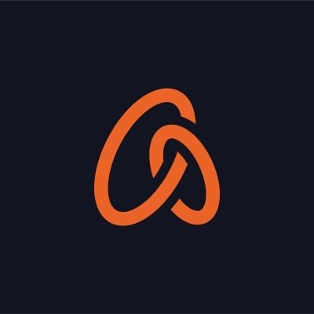
Axiōma Search
2026 – Present
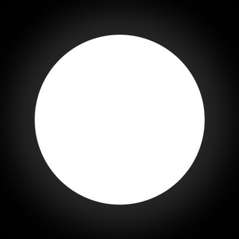
AI safety company building the safety, reliability and optimization layer for AI systems. $11M raised from top funds, founders and senior leaders at OpenAI, Anthropic, Hugging Face, Mistral and DeepMind.
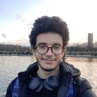
ML Researcher
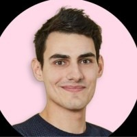
Senior Data Engineer
In December 2025, White Circle's Head of Ops, Igor, reached out looking for a recruitment partner to help staff critical AI and Data roles as the company scaled rapidly after its seed round.
The product: natural-language policies that define what an AI model should and shouldn't do, tested and enforced automatically at scale. The team also published CircleGuardBench, a benchmark for LLM guardrails.
I took ownership of two senior searches at the same time — ML Research and Data Engineering — in a fast-paced, international and demanding environment.
Benjamin, Senior Data Engineer, came from Fipto and was placed in 3 weeks. Mohamed, ML Researcher, came from Hugging Face with a Centrale Paris background and was placed in 5 weeks. Both passed their trial period and are still there 7–8 months later. CEO Denis Shilov expressed strong satisfaction with the quality and speed of delivery.
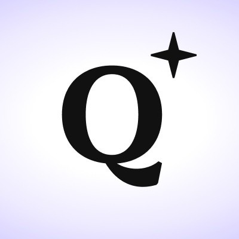
Europe's leading privacy-first search engine, headquartered in Paris. Building its own web index with Ecosia (European Search Perspective) and Staan, a search API that gives LLMs and AI products access to fresh web data. Default search engine of the European Parliament (June 2026) and the French government.
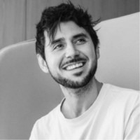
Applied Scientist
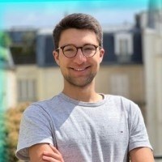
I approached Qwant's hiring team proactively, sending Matyas's anonymized profile directly by email. He was hired shortly after, which is a rare outcome for a proactive approach.
About the searches: Qwant is a web-scale search engine turning into a search-technology company. It moves from external search providers to its own retrieval and ranking stack, and experiments with LLM-generated answers. The profiles sit in information retrieval: dense and hybrid retrieval, ranking, query understanding and LLM fine-tuning for relevance.
I was then entrusted with a second, more specific search for a Data Scientist, which led to Axel's placement. I worked closely with CTO Laurent Ach on both searches, from sourcing through to closing.
Matyas works on retrieval and ranking systems on Vespa, including multimodal retrieval. Axel worked on query understanding and on fine-tuning LLMs for search relevance.
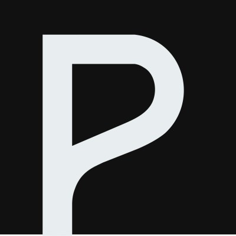
Y Combinator S24 — generative AI for furniture product visuals. $3.5M seed from Partech & YC, 400+ furniture clients. Founded by engineers from Uber, BCG X and Scibids.
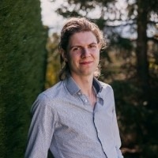
Founding AI Scientist
Presti builds computer-vision and generative models specialized for furniture: transformer-based diffusion models, initially built on Stable Diffusion XL and fine-tuned on 75K+ furniture photos, turn a single product shot into lifestyle imagery, with realistic shadows and added accessories.
For the AI Scientist role, Presti needed a high-caliber researcher with a PhD in Computer Vision and a genuine startup mindset. I identified Antonin — a rare profile combining deep academic expertise with hands-on product orientation. The position was filled in 4 weeks.
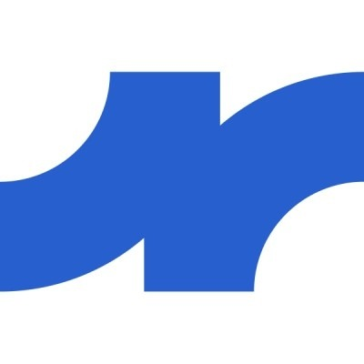
French HealthTech leader in medical-data interoperability — €50M raised (Partech, Serena). 800+ healthcare establishments, AI-powered structuring of clinical data.
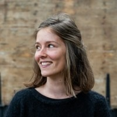
Software Engineer
Lifen connects hospital information systems to the outside world (MSSanté, shared patient records) and builds AI models that extract and structure clinical data from medical documents. It created the FHIR France meetup.
Full-stack developer search (Python/FastAPI, React/TypeScript) within a long-term recruitment partnership. Placed during my time at Lity — a long-standing relationship. Position filled in 6 weeks.
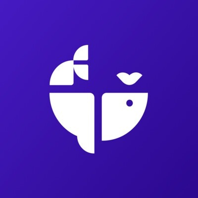
Decentralized finance protocol — market-neutral AMM combining quantitative market-making models with on-chain execution (Chainlink price feeds), live on Ethereum, Arbitrum and Polygon. $4.5M seed from Signature Ventures, Kima Ventures (Xavier Niel), and top Web3 angels. Partners include Lido and Aave.
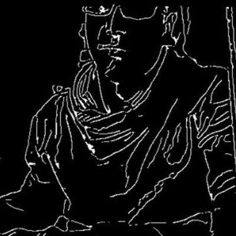
Senior Software Engineer
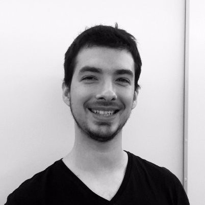
Senior Software Engineer
Swaap Labs was an existing partner from my time at Lity, and I continued the relationship.
The team works with leading market-making researchers, and its contracts are audited (ChainSecurity, Quantstamp). It needed senior Rust engineers for the core: low-latency backend services that interact with the on-chain ecosystem and work hand in hand with the research team on optimization problems.
The first candidate I found, Pierre, was presented directly to the client and hired — placed in 3 weeks. He brings an infrastructure and continuous-delivery background (OVH, Veepee). The placement built direct trust with CEO David Bouba.
Six months later, David came back to me for a second hire: Julien, a Rust specialist with a PhD who previously built the Zenoh-Flow data-flow framework in Rust — placed in 4 weeks. Proof of a lasting partnership.
Fintech early-stage startup that entrusted Bluecoders with the recruitment of its founding core team.
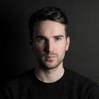
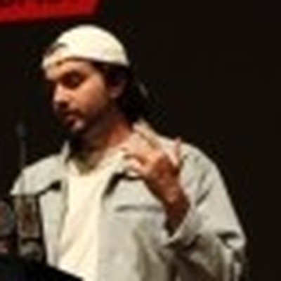
Hector mandated Bluecoders for hires it found difficult to staff: a Lead Designer and a Security Engineer, both urgent hires for the founding core team. The company is still in stealth mode, so I can't share all the details.
Design and cybersecurity sit well outside my usual AI/Data scope, and I had never recruited for these roles before. The mandate was demanding, but I found strong candidates quickly: Loris was placed in 3 weeks, Jérémy in 6.
Proof of adaptability across hiring domains.
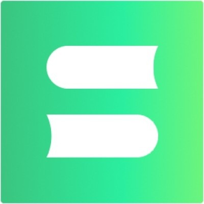
Leading French EdTech — a tutoring marketplace connecting 40K+ families with 4K+ certified teachers, plus a content arm reaching 4M+ monthly readers. Elected Brand of the Year 2026. Founded at Station F.
Les Sherpas needed an urgent CTO replacement. I worked in close collaboration with CEO Étienne Porche throughout the search, with near day-to-day phone follow-up.
A rigorous six-step interview process, followed closely on my side across roughly 30 interviews. Loup came out as the best profile among the candidates I presented.
I followed the process all the way through to the negotiation: the offer was negotiated and closed, and accepted within 24 hours.
The search in numbers